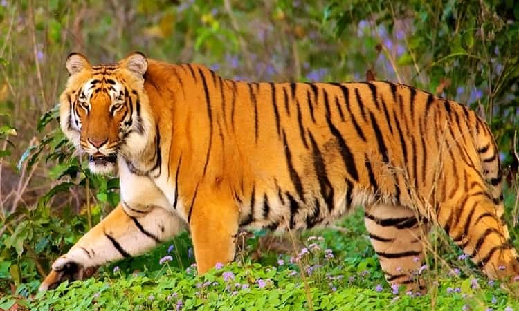

Habitat
Tigers used to be abundant in Asian countries, including Turkey and Russia. However, the past century has seen the tigers lose almost a hundred percent of the place they used to inhabit.
The tiger Panthera tigris is the largest extant cat species and a member of the genus Panthera. It is most recognisable for its dark vertical stripes on orange-brown fur with a lighter underside. It is an apex predator, primarily preying on ungulates such as deer and wild boar. It is territorial and generally a solitary but social predator, requiring large contiguous areas of habitat, which support its requirements for prey and rearing of its offspring.
Tigers used to be abundant in Asian countries, including Turkey and Russia. However, the past century has seen the tigers lose almost a hundred percent of the place they used to inhabit.
India currently hosts the largest tiger population. Major reasons for population decline are habitat destruction, habitat fragmentation and poaching. Tigers are also victims of human–wildlife conflict, in particular in range countries with a high human population density.
There are three colour variants white, golden and stripeless snow white that now rarely occur in the wild due to the reduction of wild tiger populations, but continue in captive populations. The white tiger has white fur and sepia brown stripes. The golden tiger has a pale golden pelage with a blond tone and reddish-brown stripes. The snow white tiger is a morph with extremely faint stripes and a pale reddish-brown ringed tail.
Their elegant gait, haughty demeanor, and their dynamic movements are an example of an adapted anatomy for hunting. Since tigers are at the top of the food chain, they are considered super-predators.